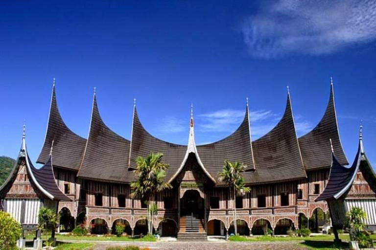

PADANG
Jika berbicara mengenai masakan khas Indonesia, tentu masakan Padang yang terkenal tidak bisa dipisahkan. Dimanapun Anda berada, makanan Padang bisa Anda temukan tersebar di seluruh Indonesia.Padang sendiri memiliki masakan paling populer yaitu Rendang yang biasa disajikan di gedung-gedung yang beratap tanduk. Secara historis, Padang dulunya merupakan kota pelabuhan bagi Belanda sehingga arsitekturnya dipengaruhi dari luar.
Pantai Padang
Pantai Padang merupakan salah satu objek wisata di Padang yang menjadi favorit banyak wisatawan. Terlebih setelah Pemerintah Kota Padang memaksimalkan potensi destinasi ini dengan berbagai fasilitas.
Jembatan Siti Nurbaya
DJembatan Siti Nurbaya merupakan tempat wisata di Padang lain yang juga ikonik. Jembatan ini membentang sepanjang 156 meter di atas Sungai Batang Aru.
Kota Tua Padang
Kota Tua Padang merupakan deretan gedung tua yang memiliki usia hampir mencapai ratusan tahun. Objek wisata di Padang yang satu ini membentang dari Jalan Muaro, Pasa Mudik, Pasa Gadang, Batang Arau, Pada Tanah Kongsi, hingga wilayah Pondok.
kembali